Exploração, descrição e visualização de dados
Prof. Dr. Sadraque E. F. Lucena
http://sadraquelucena.github.io/inferencia1
FARMA0048 - Bioestatística
Programa de Pós-Graduação em Ciências Farmacêuticas (PPGCF)
O papel da análise exploratória em um artigo científico
Por que explorar os dados?
- O objetivo da análise exploratória é entender os dados que estamos analisando.
- Isso nos ajuda a entender sobre qual população as inferências de uma pesquisa serão válidas.
- A análise exploratória permite identificar:
- padrões
- distribuições
- diferenças
- associações
- valores extremos
- inconsistências
- Ela ajuda a transformar um banco de dados em evidência compreensível.
Exemplo
- Um estudo avaliou a concentração plasmática de um fármaco em 120 pacientes.
- Antes de comparar os tratamentos, precisamos saber:
- Como as concentrações estão distribuídas?
- Existem valores extremos?
- A distribuição é aproximadamente simétrica?
- Há diferenças aparentes entre os grupos?
- Existem dados faltantes?
- Explorar é entender antes de concluir.
O que é análise exploratória de dados?
- É o conjunto de procedimentos utilizados para investigar, resumir e visualizar os dados, buscando identificar estruturas e padrões relevantes.
- Inclui:
- inspeção dos dados;
- estatísticas descritivas;
- tabelas;
- gráficos;
- identificação de padrões;
- identificação de valores discrepantes;
- avaliação da distribuição das variáveis;
- investigação inicial de associações.
- Objetivo principal: Descobrir como os dados se comportam antes de decidir como analisá-los.
Explorar não é testar
- Na exploração, perguntamos: “O que está acontecendo nos meus dados?”
- No teste de hipótese, perguntamos: “Os dados fornecem evidência suficiente para uma determinada hipótese?”
- Exemplo: Estudo com 3 tratamentos para hipertensão.
Exploração:
- Visualizar a pressão arterial em cada grupo;
- Calcular média, mediana e dispersão;
- Identificar valores extremos.
Inferência:
- Testar se há evidência de diferença entre os tratamentos.
- Primeiro: entender os dados. Depois: testar hipóteses.
Quatro etapas diferentes
| Etapa | Pergunta principal | Exemplo |
|---|---|---|
| Explorar | O que há nos dados? | Existem valores extremos? |
| Descrever | Como resumir os dados? | Mediana = 12,4 mg/L |
| Testar hipóteses | Há evidência de uma diferença/associação? | Os tratamentos diferem? |
| Modelar | Como explicar ou prever um desfecho? | Quais fatores estão associados à resposta? |
- Essas etapas são relacionadas, mas não são sinônimas.
Exploração
- Busca compreender a estrutura dos dados sem partir imediatamente para uma conclusão inferencial. Algumas perguntas típicas são:
- Como os dados estão distribuídos?
- Há assimetria?
- Existem valores extremos?
- Existem grupos distintos?
- Há associação entre variáveis?
- Existem padrões inesperados?
- Exemplo: Concentração plasmática.
\[2{,}1 \quad 2{,}4 \quad 2{,}7 \quad 3{,}0 \quad 3{,}2 \quad 3{,}4 \quad 3{,}8 \quad 15{,}7 ~~ mg/L\]
- Antes de realizar qualquer teste precisamos verificar se o valor 15,7 é um erro ou uma observação real (Exploração).
Descrição
- Resume quantitativamente aquilo que foi observado. \(\phantom{aaaaaaaaaaaaaaaaaaaa}\)
Variáveis categóricas
- Frequência absoluta;
- Frequência relativa;
- Proporção.
Variáveis quantitativas
- Média;
- Mediana;
- Desvio-padrão;
- Intervalo interquartil;
- Quantis.
- Exemplo: Em 120 pacientes, 72 são mulheres (60%), com idade 54,2 ± 11,3 anos e concentração plasmática de 8,7 (6,1–12,4) mg/L.
Testar hipóteses
- Utiliza uma amostra para produzir conclusões sobre uma população ou avaliar hipóteses científicas.
- Aqui temos inferência estatítica e não análise exploratória.
- Exemplo: A concentração plasmática média difere entre dois tratamentos?
- Hipóteses:
- \(H_0:\) não há diferença entre os tratamentos.
- \(H_1\): há diferença entre os tratamentos.
- Hipóteses:
- O teste estatístico produz evidências para avaliar essas hipóteses.
- Importante: Um teste estatístico não substitui a exploração dos dados.
Modelagem estatística
- Busca representar matematicamente a relação entre variáveis.
- Exemplo: Quais fatores estão associados à concentração plasmática do fármaco?
Possíveis variáveis:
- dose;
- idade;
- peso;
- função renal;
- sexo;
- interação medicamentosa.
Um modelo pode permitir:
- estimar associações;
- controlar variáveis de confusão;
- quantificar efeitos;
- realizar previsões.
\[\text{Concentração} = \beta_0 + \beta_1(\text{dose}) +\beta_2(\text{idade}) + \beta_3(\text{função renal}) + \varepsilon\]
As quatro etapas de análise de dados
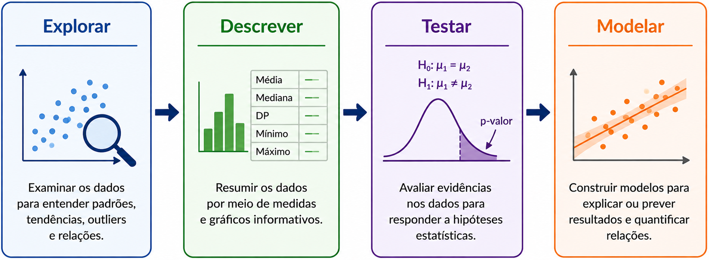
- Explorar: Como os dados se comportam?
- Descrever: Como posso resumir esse comportamento?
- Testar: Há evidência estatística para a hipótese?
- Modelar: Como as variáveis se relacionam e quanto cada uma contribui?
Uma boa análise exploratória precisa responder perguntas
- Uma boa análise exploratória deve permitir responder:
- Quem foi estudado?
- O que foi medido?
- Como cada variável se distribui?
- Há dados faltantes ou inconsistentes?
- Existem valores extremos?
- Há diferenças aparentes entre grupos?
- Existem associações entre variáveis?
- Há padrões ao longo do tempo?
Para cada variável, pergunte:
- O que é? (Qual é o tipo variável?)
- Como se distribui? (Quais valores são frequentes? Há assimetria?)
- Há problemas? (Observações faltantes, valores impossíveis ou extremos?)
- Há relações? (A variável parece associada a outras?)
- O que isso implica? (Como devo descrever, visualizar e analisar essa variável?)
- Exemplo: Concentração plasmática (mg/L)
- quantitativa contínua
- assimétrica à direita
- 3 valores extremos
- maior concentração aparente no grupo tratado com dose alta
- Isso já produz decisões analíticas.
A exploração orienta a estatística descritiva
- A escolha da estatística descritiva não deve ser automática.
- A distribuição dos dados orienta como resumir os dados.
- Exemplo:
- Distribuição aproximadamente simétrica: média ± desvio-padrão
- Idade (distribuição aproximadamente simétrica): 52,4 ± 11,2 anos
- Distribuição assimétrica: mediana (intervalo interquartil – IQQ)
- Concentração plasmática (distribuição assimétrica): 8,4 (5,7–13,8) mg/L
- Distribuição aproximadamente simétrica: média ± desvio-padrão
Não existe “uma estatística certa” para toda variável
- A mesma variável pode exigir diferentes formas de resumo dependendo dos dados.
- Exemplo: Considere a concentração plasmática de um fármaco.
- média = 18,7 mg/L
- mediana = 10,2 mg/L
- A diferença entre as duas medidas sugere que alguns valores elevados estão deslocando a média para cima.
- Precisamos investigar:
- histograma;
- boxplot;
- valores extremos;
- assimetria.
A exploração orienta o gráfico
| Situação | Gráfico |
|---|---|
| Categórica | Barras |
| Quantitativa | Histograma |
| Quantitativa | Boxplot |
| Quantitativa × quantitativa | Dispersão |
| Quantitativa × categórica | Boxplot / pontos |
| Evolução temporal | Linhas |
| Duas categóricas | Barras / tabela |
O gráfico pode revelar o que a média esconde
Considere dois grupos:
Grupo A: \(10,\;11,\;12,\;13,\;14\)
Grupo B: \(2,\;3,\;4,\;21,\;30\)
As médias podem ser semelhantes, mas as distribuições são completamente diferentes.
A visualização permite perceber:
- dispersão;
- assimetria;
- agrupamentos;
- valores extremos;
- diferenças entre grupos.
- Nunca analise isoladamente uma medida-resumo!
A exploração orienta o teste estatístico
Antes de comparar grupos, precisamos saber:
- qual é o desfecho;
- quantos grupos existem;
- se os dados são independentes;
- como a variável se distribui;
- se existem valores extremos importantes;
- qual é a escala de medida.
A exploração orienta o teste estatístico
Exemplo: Concentração plasmática em dois grupos.
Exploração:
- variável quantitativa;
- grupos independentes;
- distribuição aproximadamente simétrica.
- uma possibilidade é o teste t para grupos independentes.
- Se a distribuição for fortemente assimétrica, pode ser necessário considerar outra abordagem, como Mann-Whitney.
- O teste é consequência da estrutura dos dados.
Exemplo – Estudo famarcêutico
Pergunta: Um novo fármaco reduz a pressão arterial?
- Banco de dados: \(\phantom{aaaaaaaaaaaaaaaaaaaaaaaaaaaaaaaaaaaaaaaaaaaaaa}\)
- \(n=180\) pacientes;
- grupo controle e tratamento;
- pressão arterial;
- idade;
- sexo;
- pressão basal;
- pressão após 12 semanas.
Exemplo – Estudo famarcêutico
- Exploração:
- Há dados faltantes?
- A pressão arterial apresenta distribuição aproximadamente simétrica?
- Existem valores extremos?
- Os grupos apresentam características diferentes?
- Idade ou pressão basal parecem relacionadas ao desfecho?
- As respostas orientam:
- estatística descritiva
- gráficos
- teste ou modelo
- apresentação dos resultados
Qualidade dos dados
Dados
- Uma análise estatística é tão confiável quanto os dados que a alimentam.
- Antes de calcular médias, utilizar testes ou modelos, precisamos verificar:
- estrutura do banco;
- valores possíveis;
- codificação;
- unidades;
- duplicações;
- dados faltantes;
- valores extremos.
- Erro no banco → análise incorreta → resultado incorreto → conclusão incorreta.
Exemplo de banco de dados
| id | grupo | idade | sexo | oleosidade_baseline | oleosidade_8sem | |||
|---|---|---|---|---|---|---|---|---|
| 001 | Controle | 34 | F | 72 | 69 | |||
| 002 | Controle | 29 | F | 68 | 70 | |||
| 003 | Controle | 41 | M | 75 | 73 | |||
| 004 | Tratamento | 32 | F | 71 | 52 | |||
| 005 | Tratamento | 37 | F | 69 | 48 | |||
| 006 | Tratamento | 45 | M | 77 | 54 |
- Cada linha representa um participante. Cada coluna representa uma variável.
Inspeção inicial do banco de dados
Antes de analisar, precisamos conhecer a estrutura do banco:
Antes da análise, verifique:
- número de participantes e variáveis;
- tipo e unidade de cada variável;
- valores mínimos e máximos;
- dados faltantes;
- duplicações;
- códigos e categorias.
O que fazer: documente a estrutura do banco e faça uma checagem sistemática antes da análise.
Valores impossíveis ou biologicamente absurdos
Exemplos:
- idade = 250 anos;
- peso = −20 kg;
- pH = 25;
- concentração = −5 mg/L.
O que fazer: verificar a fonte original; corrigir apenas se houver evidência de erro e, se não for possível confirmar, tratar como dado faltante.
Erros de codificação
Exemplo: sexo (1 = feminino, 2 = masculino)
- Dados: \(1 \quad 2 \quad 1 \quad 7 \quad 2\)
- O 7 pode ser erro, categoria desconhecida ou outra codificação.
O que fazer: consultar o dicionário do banco/protocolo antes de recodificar.
Unidades de medida inconsistentes
- Uma mesma variável pode estar em escalas diferentes.
Exemplo: Concentração na mesma base de dados medida em
- mg/L
- µg/mL
- ng/mL
O que fazer: converter todas as observações para uma única unidade antes da análise.
Dados duplicados
Exemplo:
| ID | Grupo | Idade |
|---|---|---|
| 101 | Controle | 35 |
| 102 | Tratamento | 41 |
| 101 | Controle | 35 |
- O participante 101 aparece duas vezes.
O que fazer: confirmar se é duplicação ou medida repetida; remover apenas duplicações indevidas.
Dados faltantes – missing data
- Um dado faltante ocorre quando uma informação esperada não foi registrada.
- Exemplo:
| ID | Grupo | Idade | Oleosidade |
|---|---|---|---|
| 001 | Controle | 34 | 72 |
| 002 | Controle | 29 | NA |
| 003 | Tratamento | 41 | 58 |
O que fazer: quantifique a proporção de missing e investigue seu padrão antes de decidir como tratá-los.
Dados faltantes – missing data
Quando eliminar ou imputar?
- Se há poucos valores faltantes e ausência aparentemente aleatória, pode ser aceitável fazer análise por casos completos (complete-case analysis).
- Nesse caso, removem-se os participantes com dados faltantes.
- Se a quantidade dados faltantes é relevante ou há um padrão relacionado às características dos participantes, deve-se considerar imputação múltipla.
- Pode-se usar métodos de imputação como MICE (Multivariate Imputation by Chained Equations, ou Imputação Múltipla por Equações Encadeadas).
- Não imputar quando o valor representa uma categoria estruturalmente ausente, como “não aplicável”.
- Não existe um percentual universal que determine quando imputar: a decisão depende da quantidade, do padrão e do mecanismo dos dados faltantes.
Valores extremos
Um valor extremo pode ser:
- erro de digitação;
- erro de unidade;
- erro de medição;
- observação biologicamente verdadeira.
Exemplo:
\[7,1 \quad 7,8 \quad 8,2 \quad 8,5 \quad 9,0 \quad 31,7\]
O que fazer: investigar a origem do valor antes de decidir qualquer exclusão.
Descrição de Variáveis Qualitativas
Variável qualitativa: como descrever?
Uma variável qualitativa representa categorias, e sua descrição é feita principalmente por:
- Frequência absoluta → \(n\)
- Frequência relativa → proporção
- Percentual → %
Principais formas de apresentação
| Tipo de variável | Descrição | Gráfico |
|---|---|---|
| Nominal | n (%) | Barras |
| Ordinal | n (%) | Barras ordenadas |
| Binária | n (%) | Barras |
Frequência absoluta
- Mostra o número de indivíduos em cada categoria. \(\phantom{aaaaaaaaaaaa}\)
- Exemplo:
| Reação adversa | n |
|---|---|
| Sim | 18 |
| Não | 82 |
Vantagens
- Simples;
- Fácil interpretação;
- Mantém o tamanho real de cada grupo.
Desvantagens
- Dificulta comparações entre amostras de tamanhos diferentes.
Frequência relativa
- Expressa a participação de cada categoria na amostra.
- Dada por: \[\frac{\text{frequência da categoria}}{\text{tamanho da amostra}}\]
Exemplo: Se uma categoria tem 18 pacientes e a amostra 100,
\[ f_{i}=\frac{18}{100}=0{,}18 \quad \text{ou } 18\% \]
Vantagens
- Permite comparar amostras de tamanhos diferentes.
Desvantagens
- Menos intuitiva que a frequência absoluta para amostras pequenas.
Tabela de frequência
- Dados categóricos podem ser organizados em frequências e percentuais em uma tabela.
| Evento adverso | n | % |
|---|---|---|
| Náusea | 15 | 15,0 |
| Cefaleia | 10 | 10,0 |
| Rash | 5 | 5,0 |
| Nenhum | 70 | 70,0 |
Vantagens
- Precisa;
- Compacta;
- Fácil de comparar categorias.
Desvantagens
- Menos visual que um gráfico.
Gráfico de barras
- Para uma variável categórica, uma das melhores visualizações é o gráfico de barras.
- Cada categoria da variável é representada por uma barra cuja altura corresponde à frequência.
- Facilita a visualização e comparação das frequências entre categorias.
Vantagens
- Intuitivo;
- Fácil comparação;
- Adequado para muitas categorias.
Desvantagens
- Menos preciso que uma tabela;
- Pode ficar poluído com muitas categorias.
Descrição de variáveis quantitativas
Variável quantitativa: como descrever?
Uma variável quantitativa representa valores numéricos.
Para descrevê-la, precisamos avaliar:
- Tendência central → onde os dados se concentram
- Dispersão → quanto os dados variam
- Posição → como os valores se distribuem
- Forma → simetria e assimetria
Variável quantitativa: como descrever?
Principais medidas
| Aspecto | Medidas |
|---|---|
| Tendência central | Média, mediana, moda |
| Posição | Quartis, percentis |
| Dispersão | Amplitude, variância, DP, IIQ, CV |
| Forma | Assimetria |
- Uma única medida não descreve adequadamente uma distribuição.
Por que uma única medida não é suficiente?
Considere:
- Grupo A: 48, 49, 50, 51, 52
- Grupo B: 20, 30, 50, 70, 80
- Ambos possuem média igual a 50, mas apresentam distribuições muito diferentes.
O que fazer: apresentar uma medida de tendência central e uma medida de dispersão.
- Centro sem dispersão fornece uma visão incompleta dos dados.
Média
- Soma de todos os valores dividida pelo número de observações.
- Para que serve: Representar o centro dos dados.
- Quando usar: Distribuição dos dados é simétrica.
- Vantagens:
- Utiliza todas as observações;
- Base para diversos métodos estatísticos.
- Desvantagens:
- Sensível a valores extremos;
- Pode ser pouco representativa em distribuições muito assimétricas.
- Exemplo: Dose média = 52,4 mg/dia
Mediana
- Valor que divide os dados ordenados ao meio.
- Representar a posição central da distribuição.
- Quando usar: Distribuição dos dados é assimétrica ou há muitos valores extremos.
- Vantagens:
- Pouco influenciada por valores extremos;
- Adequada para distribuições assimétricas.
- Desvantagens:
- Não utiliza diretamente a magnitude de todos os valores.
- Exemplo: Concentração mediana = 8,4 mg/L
Moda
- Valor que ocorre com maior frequência.
- Para que serve: Identificar o valor mais frequente.
- Quando usar: Quando o valor mais frequente possui interesse prático.
- Vantagens:
- Fácil interpretação;
- Pode ser utilizada quando a média não é adequada.
- Desvantagens:
- Pode não existir;
- Pode haver mais de uma moda;
- Pouco informativa para muitas variáveis contínuas.
- Exemplo: Dose mais frequente = 50 mg/dia
Quantis
- Valores que dividem os dados ordenados em determinadas proporções.
- Para que serve: Descrever a posição dos valores na distribuição.
- Quando usar: Quando interessa conhecer a posição relativa das observações.
- Vantagens:
- Úteis para descrever a distribuição;
- Pouco influenciados por valores extremos.
- Desvantagens:
- Não resumem diretamente toda a variabilidade.
- Exemplo: P90 = 18,5 mg/L
Quartis
- Dividem os dados ordenados em quatro partes.
- Para que serve: Descrever a posição e a distribuição dos dados.
- Principais quartis:
- Q1 = P25;
- Q2 = P50 = mediana;
- Q3 = P75.
- Vantagens:
- Fáceis de interpretar;
- Fundamentais para o cálculo do IIQ e do boxplot.
- Desvantagens:
- Não descrevem toda a distribuição.
- Exemplo: Q1 = 5,7 mg/L; Q3 = 13,8 mg/L
Percentis
- Valor abaixo do qual está determinada proporção dos dados.
- Para que serve: Identificar a posição de uma observação dentro da distribuição.
- Quando usar: Quando pontos de corte ou posições específicas da distribuição são relevantes.
- Vantagens:
- Fácil interpretação;
- Úteis para estabelecer referências.
- Desvantagens:
- Percentis extremos podem ser instáveis em amostras pequenas.
- Exemplo: P95 = 21,4 mg/L
Amplitude
- Diferença entre o maior e o menor valor.
- Para que serve: Medir a extensão total dos dados.
- Quando usar: Para uma descrição rápida da variação observada.
- Vantagens:
- Simples;
- Fácil interpretação.
- Desvantagens:
- Utiliza apenas dois valores;
- Muito sensível a valores extremos.
- Exemplo: Concentração = 5,2–31,7 mg/L
Variância
- Média dos desvios quadráticos em relação à média.
- Para que serve: Quantificar a variabilidade dos dados.
- Quando usar: Principalmente como base para outros métodos estatísticos.
- Vantagens:
- Fundamental para diversos procedimentos estatísticos;
- Utiliza todas as observações.
- Desvantagens:
- Unidade fica elevada ao quadrado;
- Pouco intuitiva para interpretação.
- Exemplo: Variância da concentração = 16,4 (mg/L)²
Desvio-padrão
- Raiz quadrada da variância.
- Para que serve: Quantificar a dispersão dos dados na mesma unidade da variável.
- Quando usar: Distribuição aproximadamente simétrica.
- Vantagens:
- Fácil interpretação;
- Amplamente utilizado em artigos científicos.
- Desvantagens:
- Sensível a valores extremos;
- Menos adequado para distribuições muito assimétricas.
- Exemplo: Pressão arterial = 128 ± 14 mmHg
Intervalo interquartil — IIQ
- Diferença entre o terceiro e o primeiro quartil.
- \(IIQ = Q_3 - Q_1\)
- Para que serve: Medir a dispersão dos 50% centrais dos dados.
- Quando usar: Distribuições assimétricas ou com valores extremos.
- Vantagens:
- Pouco influenciado por valores extremos;
- Adequado para distribuições assimétricas.
- Desvantagens:
- Ignora os 50% extremos da distribuição.
- Exemplo: Q1 = 5,7; Q3 = 13,8 → IIQ = 8,1 mg/L
Coeficiente de variação — CV
- Relação entre o desvio-padrão e a média.
- [ CV = ]
- Para que serve: Comparar a variabilidade relativa entre medidas.
- Quando usar: Quando interessa comparar precisão/variabilidade em diferentes escalas.
- Vantagens:
- Permite comparação relativa;
- Muito útil em Ciências Farmacêuticas.
- Desvantagens:
- Inadequado quando a média é próxima de zero;
- Não deve ser utilizado indiscriminadamente.
- Exemplo: Método A = CV 4,2%; Método B = CV 11,8%
Média ± desvio-padrão
- A média sempre deve ser apresentada com o desvio-padrão.
- Para que serve: Resumir centro e dispersão.
- Quando usar: Distribuição aproximadamente simétrica.
- Vantagens:
- Compacta;
- Amplamente utilizada em artigos científicos.
- Desvantagens:
- Sensível a valores extremos;
- Pode representar mal distribuições assimétricas.
- Exemplo: Idade = 52,4 ± 11,3 anos
Mediana (IIQ)
- Apresentação da mediana deve sermpre vir acompanhada do intervalo interquartil.
- Para que serve: Resumir centro e dispersão de uma distribuição.
- Quando usar: Distribuição assimétrica ou com valores extremos relevantes.
- Vantagens:
- Robusta a valores extremos;
- Adequada para distribuições assimétricas.
- Desvantagens:
- Não utiliza diretamente todos os valores;
- Menos informativa quando a distribuição é aproximadamente simétrica.
- Exemplo: Concentração = 8,4 (5,7–13,8) mg/L
Média × mediana
- A relação entre média e mediana ajuda a identificar assimetria.
- Distribuição aproximadamente simétrica: \(\text{média} \approx \text{mediana}\)
- Distribuição assimétrica: \(\text{média} \neq \text{mediana}\)
- Para que serve: Orientar a escolha da estatística descritiva.
- Exemplo:
- Média = 18,7 mg/L;
- Mediana = 10,2 mg/L.
- Interpretação: Possível influência de valores elevados.
Relação entre distribuição e estatística descritiva
- Primeiro observe a distribuição; depois escolha como resumir os dados.
| Distribuição | Tendência central | Dispersão |
|---|---|---|
| Aproximadamente simétrica | Média | DP |
| Assimétrica | Mediana | IIQ |
| Valores extremos relevantes | Mediana | IIQ |
- Regra prática:
- Simétrica → média ± DP;
- Assimétrica → mediana (IIQ).
- Cuidado: A escolha não deve depender apenas de um teste de normalidade.
- O que fazer: Avaliar a distribuição com histograma, boxplot e medidas descritivas.
Visualização de variáveis quantitativas (numéricas)
Histograma
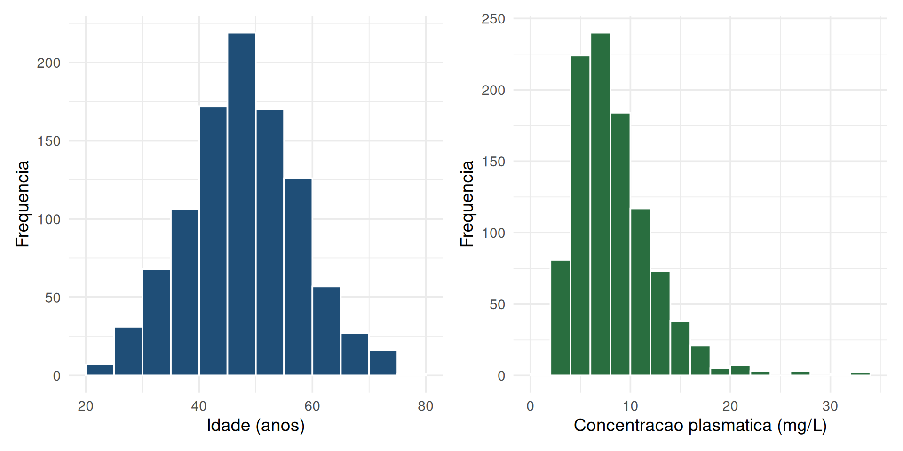
Histograma
- Para que serve: visualizar a forma da distribuição.
- Eixo x: valores ou intervalos da variável.
- Eixo y: frequência, frequência relativa ou densidade.
- Cada barra representa um intervalo de valores.
- A largura da barra representa a amplitude do intervalo.
- A altura representa a quantidade relativa de observações.
- Observe: centro, dispersão, assimetria, valores extremos e possíveis múltiplos grupos.
- O formato geral é mais importante que cada barra individual.
Histograma – Distribuição aproximadamente simétrica
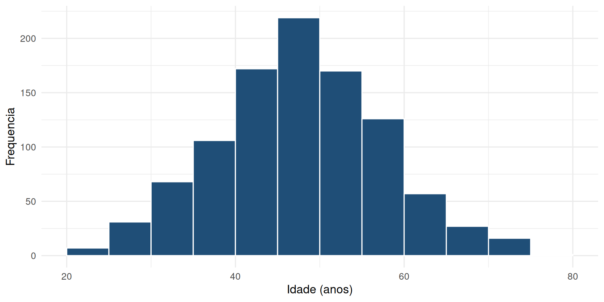
- Caudas aproximadamente semelhantes.
- Centro bem definido.
- Média e mediana tendem a ser próximas.
- Nesse caso, média ± DP pode ser uma representação adequada.
Histograma – Assimetria à direita
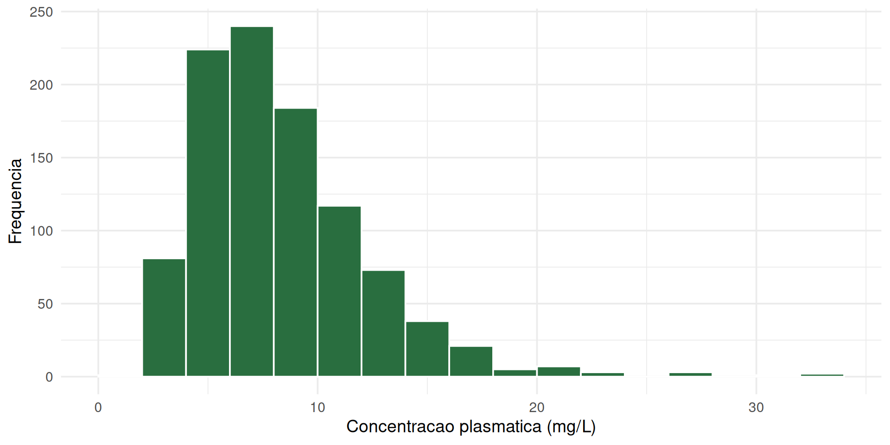
- Maior concentração de observações em valores baixos.
- Cauda prolongada para valores altos.
- Média tende a ser maior que a mediana.
- Nesse caso deve-se considerar mediana (IIQ) e investigar valores elevados.
Histograma – Assimetria à esquerda
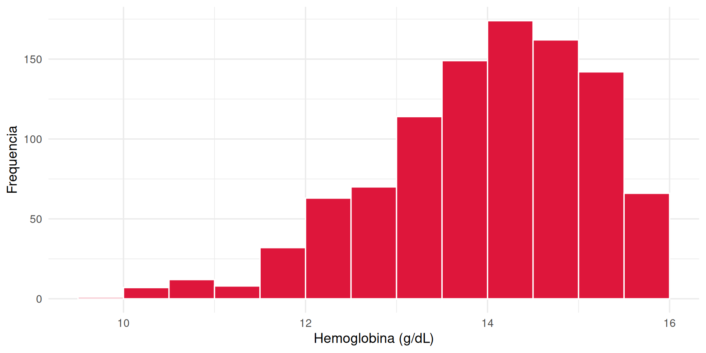
- Maior concentração de observações em valores altos.
- Cauda prolongada para valores baixos.
- Média tende a ser menor que a mediana.
- Nesse caso deve-se considerar mediana (IIQ) e investigar valores elevados.
Histograma – Distribuição multimodal
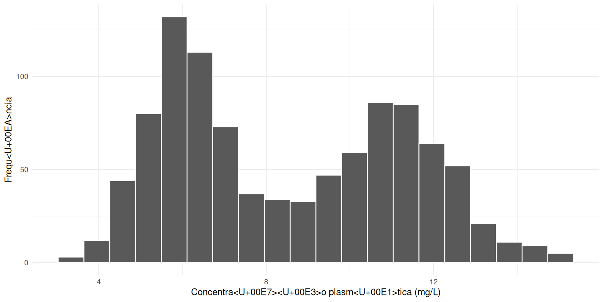
- Mais de um pico na distribuição.
- Pode indicar subgrupos, diferentes populações, diferentes tratamentos; ou mistura de mecanismos biológicos.
- Deve-se investigar se existem subgrupos antes de resumir todos os participantes com uma única média.
Curva de densidade
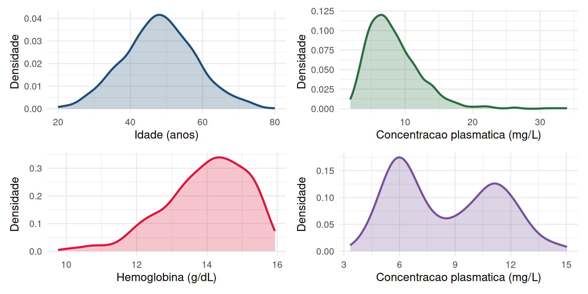
- É uma alternativa ao histograma.
- Para que serve: facilitar a visualização da forma geral da distribuição.
- Vantagem: permite comparar distribuições com diferentes tamanhos amostrais.
Boxplot
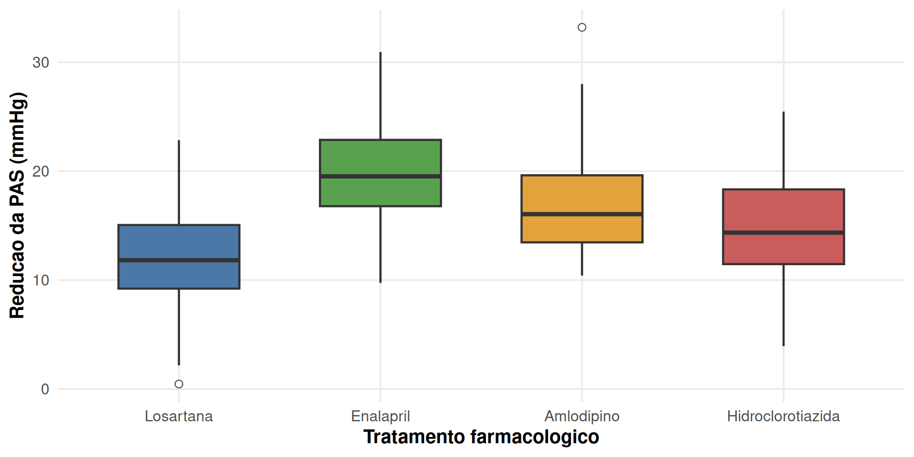
Boxplot
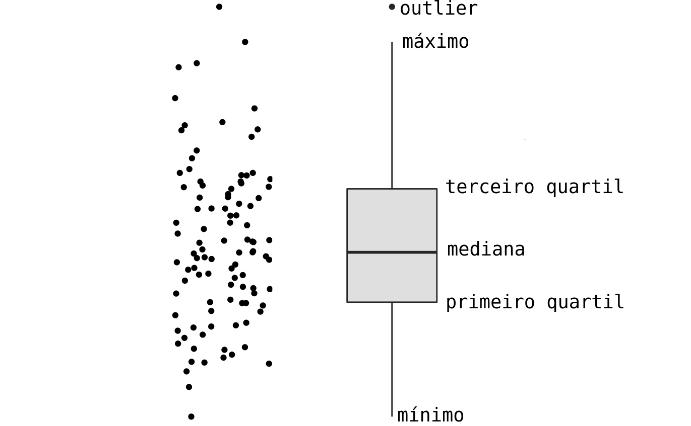
Boxplot
- Um boxplot permite comparar: posição central, dispersão, assimetria, valores extremos e distribuição entre grupos.
- Exemplo: Concentração plasmática.
| Grupo | Mediana | IIQ |
|---|---|---|
| Controle | 6,8 | 4,9–8,7 |
| Tratamento | 10,4 | 7,8–14,2 |
- O que fazer: use boxplots lado a lado quando a comparação entre grupos for importante.
Histograma × boxplot
| Característica | Histograma | Boxplot |
|---|---|---|
| Forma da distribuição | ★★★★★ | ★★ |
| Assimetria | ★★★★ | ★★★ |
| Valores extremos | ★★★ | ★★★★★ |
| Comparação entre grupos | ★★ | ★★★★★ |
| Detalhamento da distribuição | ★★★★★ | ★★ |
- Histograma: melhor para entender a forma.
- Boxplot: melhor para comparar grupos e dispersão.
- Os dois gráficos são complementares.
Q-Q plot
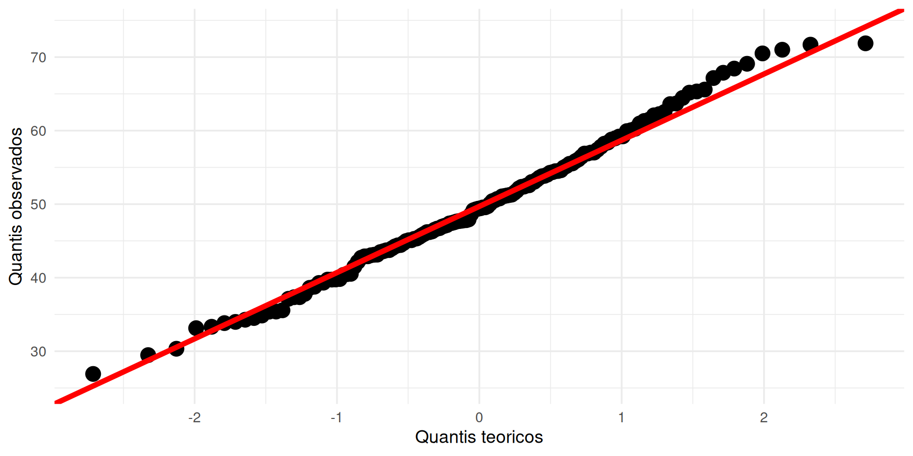
Q-Q plot
- Usado avaliar a compatibilidade dos dados com uma distribuição teórica.
- Para avaliar normalidade, compara-se com a distribuição normal.
- Pontos próximos da linha → maior compatibilidade.
- Curvaturas ou desvios sistemáticos → possíveis diferenças da normalidade.
- Desvios nas extremidades → podem indicar caudas diferentes ou valores extremos.
- O Q-Q plot é mais informativo que simplesmente olhar média e mediana.
Regra prática para visualizar uma variável quantitativa
- Histograma: observe a forma.
- Boxplot: observe dispersão e extremos.
- Q-Q plot: avalie compatibilidade com uma distribuição teórica.
- Estatísticas: compare média, mediana, DP e IIQ.
- Decisão: escolha a forma adequada de descrever e analisar os dados.
- Nenhum gráfico deve ser interpretado isoladamente.
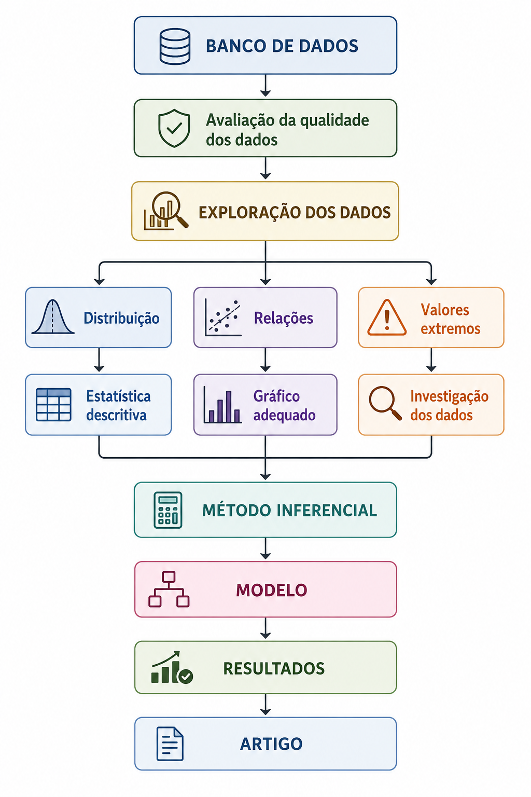
Fim